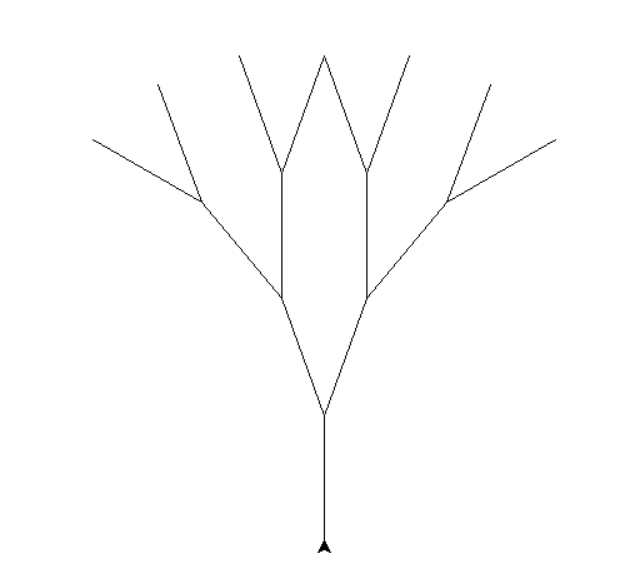

This is an example of a standard koch curve created using the function koch_curve(t, 4, 20).

This is an example of a standard Sierpinski Triangle created using the function sierpinski(t, 5, 200).

This is an example of a standard fractal tree created using the function tree(t, 4, 50, 20).
